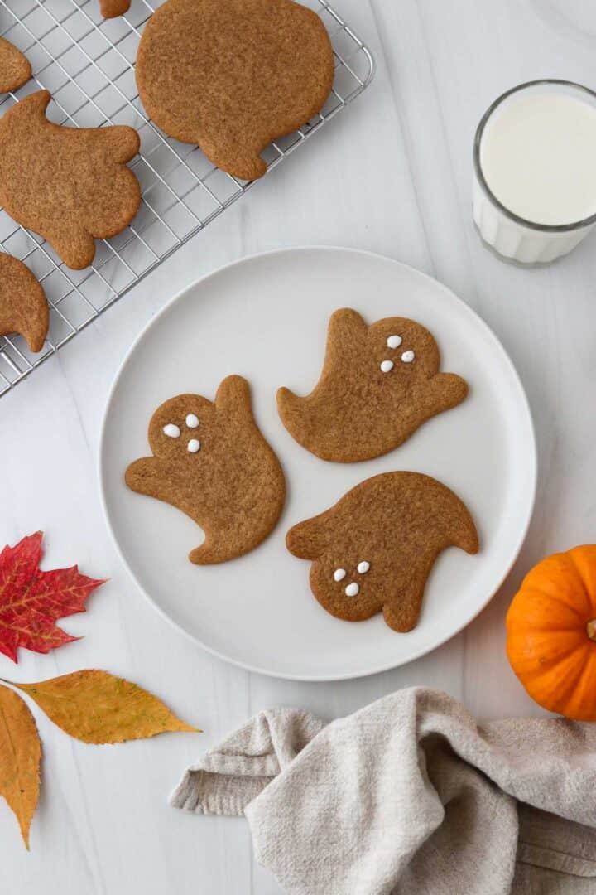

Spooky Swedish Halloween Ginger Cookies
Spooky Swedish Halloween Ginger Cookies are thin, crisp and perfectly spiced. These cut-out cookies combine the warm flavors of cinnamon, ginger, cardamom, and cloves for a treat that’s both aromatic and festive. Shaped into classic Halloween designs and finished with a simple icing or served plain, these cookies are as beautiful as they are delicious.

Ingredients:
- Flour
- Dark brown sugar
- Light corn syrup
- Cinnamon
- Ground ginger
- Cardamon
- Cloves
- Milk
- Baking soda
- Butter
- Salt
Instructions:
- Step 1: Combine flour, baking soda, salt and spices in the work bowl of a food processor. Pulse to combine.
- Step 2: Add butter and pulse until sandy in texture, about 15 seconds. With the machine running, pour the milk and syrup through the feed tube. Process until a dough forms.
- Step 3: Divide the dough into 3 equal pieces and roll each piece between 2 pieces of parchment paper until thin. Freeze the rolled dough until firm, about 15 minutes.
- Step 4: On a lightly floured surface, cut the dough into shapes.
- Step 5: Transfer the shapes to parchment lined baking sheets leaving at least an inch between each cookie.
- Step 6: Bake at 325 for 15 minutes. Cool completely before decorating or simply serve them plain.